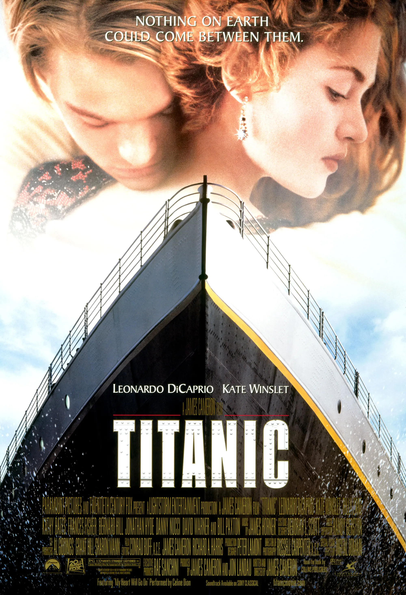

About
The Titanic is a classic American romance movie that was based on a true disaster event that happened to the RMS Titanic in 1912. The movie was directed, written, produced, and co-edited by James Cameron, and was released in 1997. The movie had Jack (starring Leonardo DiCarprio) and Rose (starring Kate Winslet) played as members of different social classes, fell in love aboard the ship against the ill-fated maiden voyage. This is a timeless, epic, and action-packed movie that will drawn you in from the beginning to end. When the movie got released on December 19,1997, Titanic received significant critical and commercial success, along with numberous awards. Titanic was nominated for 14 Academy Awards in 1998, and became the movie with the most Oscar nominations along with All About Eve (1950). Out of the 14 nominations, Titanic took home 11, including the awards for Best Picture and Best Director.
With an initial revenue of $1.84 billion, Titanic became the first film to reach the billion-dollar mark, and it remained the highest-grossing film of all time until James Cameron's next film, Avator (2010). Over the years, a number of re-releases were made since 1997 and that pushed the total revenue to $2.249 billion. This updated revenue makes Titanic the second film to hit more than $2 billion worldwide (after Avatar). In 2017, the United States National Film Registry selected the film for preservation for being "culturally, historically, or aesthetically significant".